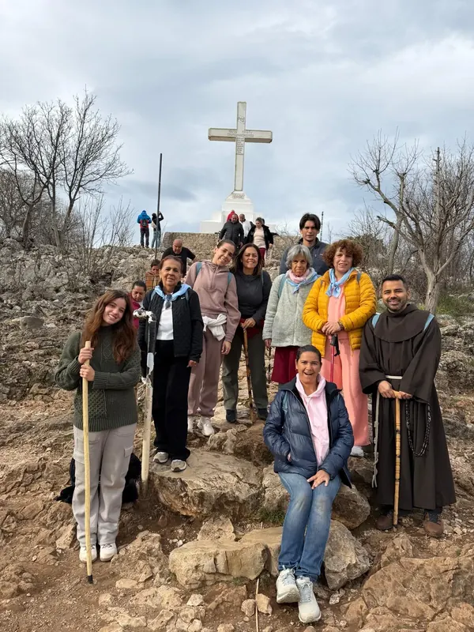

Sí: puedes hacer una peregrinación católica en español desde cualquier ciudad de Estados Unidos. En Sky Travel J&M, agencia con sede en Miami desde 2015, organizamos peregrinaciones a Tierra Santa, Medjugorje, Fátima, Lourdes y Guadalupe, todas con sacerdote y Misa diaria en español.
Vivas en Los Ángeles, Nueva York, Houston, Dallas, Chicago o cualquier otra ciudad, te ayudamos a coordinar tu vuelo para unirte al grupo. Escríbenos por WhatsApp y confirmamos contigo los detalles.

¿Cómo me uno a una peregrinación si no vivo en Miami?
- Escríbenos por WhatsApp y cuéntanos desde qué ciudad o país viajas y qué peregrinación te interesa.
- Elige la salida de 2027 que mejor se ajuste a tus fechas.
- Coordinamos contigo el vuelo desde tu ciudad y la conexión con el grupo.
- Viajas con el grupo, acompañado por un sacerdote y con Misa diaria en español.
Antes de reservar, confirmamos contigo los vuelos, los horarios y el punto de encuentro con el grupo.
¿Qué peregrinaciones hay en 2027?
La primera salida de 2027 comienza el 19 de marzo. Estas son nuestras peregrinaciones programadas:
- Tierra Santa y Medjugorje: 19 de marzo al 6 de abril.
- Medjugorje: 29 de marzo al 6 de abril.
- Guadalupe, México y Cancún: 4 al 13 de junio.
- Tierra Santa y Medjugorje: 20 de septiembre al 8 de octubre.
- Medjugorje: 30 de septiembre al 8 de octubre.
- Bajo el Manto de María: Fátima, Lourdes, Garabandal y España: 12 al 23 de octubre.
Los precios, los servicios incluidos y los planes de pago están en nuestra guía Medjugorje y Tierra Santa 2027: precios y fechas.
¿Las peregrinaciones son en español y con sacerdote?
Sí. Todas nuestras peregrinaciones cuentan con acompañamiento de un sacerdote y celebración diaria de la Eucaristía en español. Lee por qué es importante peregrinar con un sacerdote.
¿Puede viajar mi parroquia o grupo de oración desde otro estado?
Sí. Pueden unirse a uno de nuestros grupos o pedirnos una propuesta para su parroquia, grupo de oración o comunidad. Cotizamos peregrinaciones privadas para grupos de 15 personas o más, en las fechas que elijan y sujetas a disponibilidad.
Si eres sacerdote o coordinador de un grupo, escríbenos y preparamos una propuesta para tu comunidad.
¿Cuáles son las peregrinaciones más famosas?
Entre los destinos de peregrinación católica más conocidos están Tierra Santa, donde vivió Jesús; Fátima y Lourdes, dos grandes santuarios marianos de Europa; la Basílica de Guadalupe, en México; y Medjugorje, que recibe peregrinos de todo el mundo. Todos están en nuestro calendario de 2027: Tierra Santa, Fátima y Lourdes, Guadalupe y Medjugorje.
Nuestras guías por destino: Semana Santa en Tierra Santa, Fátima el 13 de octubre, Lourdes y la Basílica de Guadalupe.
¿Cuánto dura una peregrinación?
Depende del destino. En 2027, la más corta es Medjugorje, de poco más de una semana, y la más larga es Tierra Santa con Medjugorje, de casi tres semanas. Cada programa detalla su itinerario día por día.
¿Es mi primera peregrinación?
Si es tu primera vez, empieza por nuestra Guía para tu primera peregrinación católica y por ¿Qué se hace en una peregrinación católica?. Para saber cómo se vive por dentro, lee Qué se vive en Medjugorje: testimonio de fe.
¿Cómo elegir una agencia de peregrinaciones católicas?
Antes de reservar, comprueba que la agencia esté acreditada y registrada, que cada salida tenga sacerdote y que otros peregrinos la recomienden. En Sky Travel J&M:
- Somos una agencia con sede en Miami desde 2015.
- Estamos acreditados por IATA (código 10564573) e IATAN.
- Somos Vendedor de Viajes registrado en Florida (FDACS) No. ST45413.
- Todas nuestras peregrinaciones tienen sacerdote y Misa diaria en español.
- Puedes leer los testimonios de nuestros peregrinos.
Empieza a preparar tu peregrinación
Cuéntanos desde qué ciudad viajas y qué peregrinación te interesa, y te ayudamos con las fechas, los vuelos y los detalles del viaje.